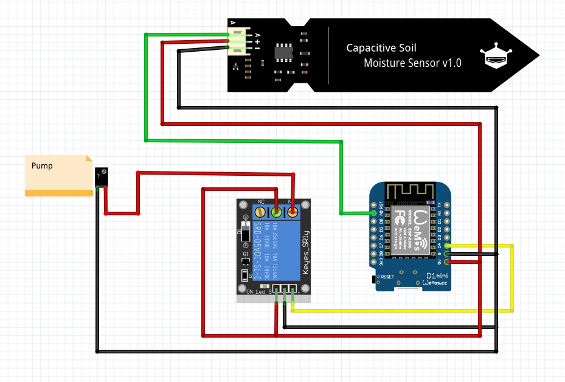

Lieber Jonas,
wir wünsche dir zum deinem awesome 35ten Geburtstag nur das Allerbeste.
Auch wenn Corona dieses Jahr nervt, hoffen wir dass du deinen Geburtstag ordentlich genießen kannst.
Da genießen und gießen sich reimen und du dich bestimmt über ein geekiges Geschenk freust, bist du nun stolzer Besitzer eines Water Boy™.
Okay, okay, du fragts dich bestimmt wer oder was ein Water Boy™ eigentlich ist.
Ganz einfach: Die einzige Bestimmung des Water Boy™ ist es für dich deine Pflanzen zu gießen.

Der Water Boy™
Wie du aber siehts, kommt dein kleiner Helfer in Einzelteilen. Du bekommst von uns nämlich ein kleines Starterkit zum selber basteln.
Folgende Teile sind dabei:
- “Arduino“ D1 mini
- Ein Prototypingboard für den D1
- Einen kapazitiven Moisture Sensor
- Zwei Wasserpumpen
- Relais zum ansteuern der Pumpe
- Wasserschlauch
Was du noch brauchst:
- Schaltlitze
- Lötzinn und Lötkolben
- Micro USB Kabel
- USB-Ladegerät oder Battery-Pack
Funktionalität
Mit dem Water Boy™ kannst du den aktuellen Feuchtigkeitswert in der Erde messen. Sobald ein (von dir eingestellter) Grenzewert erreicht wird, schaltet das Relais die Pumpe an.
Der Aufbau
Der Code
Dennis hat dir schon einmal die Grundversion des Water Boy™ auf github gelegt falls du damit starten möchtest.
https://github.com/DennHa/Waterboy_Jonas (Die *.ino datei!)
Dennis ist gerade noch dabei den Water Boy™ über die Blynk App zu erweitern um z.B. den Grenzwert über die App zu bestimmen zu können. Falls du Lust hast, können wir das Gerne auch mal bei einem Bier besprechen :)